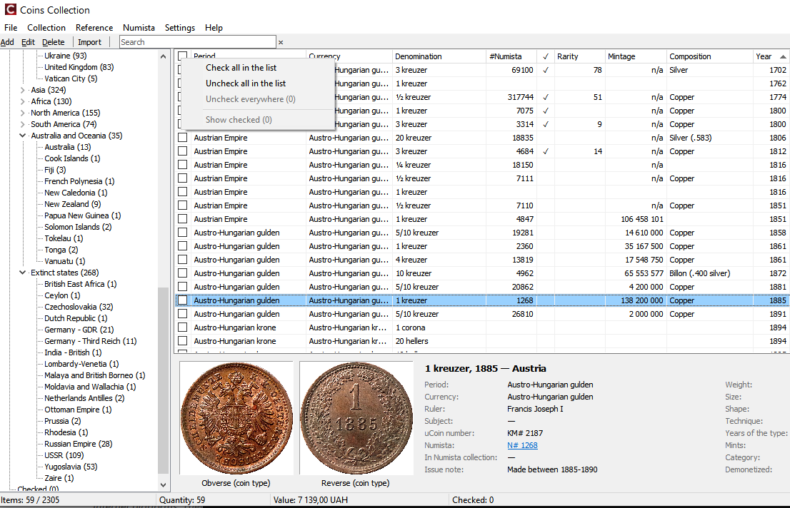

Позначки монет

Скриншот: images/10-header-menu.png
Масові операції Numista (автозв'язок, вивантаження, оновлення даних каталогу, індекс рідкісності) працюють з позначеними примірниками. Позначки зберігаються для всієї колекції, також коли ви переходите до іншої країни.
- Клацніть позначку в рядку або натисніть Пробіл.
- Клацніть позначку в заголовку колонки — позначити / зняти всі примірники поточного списку.
- Праве клацання на заголовку колонки позначок: Check all in the list/Позначити всі у списку, Uncheck all in the list/Зняти позначки у списку, Uncheck everywhere/Зняти всі позначки (уся колекція), Show checked/Показати позначені.
Позначки поза поточним списком
Якщо частина позначених примірників не в поточному списку (інша країна, пошук), рядок стану показує
Позначено: 14 (поза списком: 3). Відкрийте Checked/Позначені у дереві, щоб побачити їх усі.